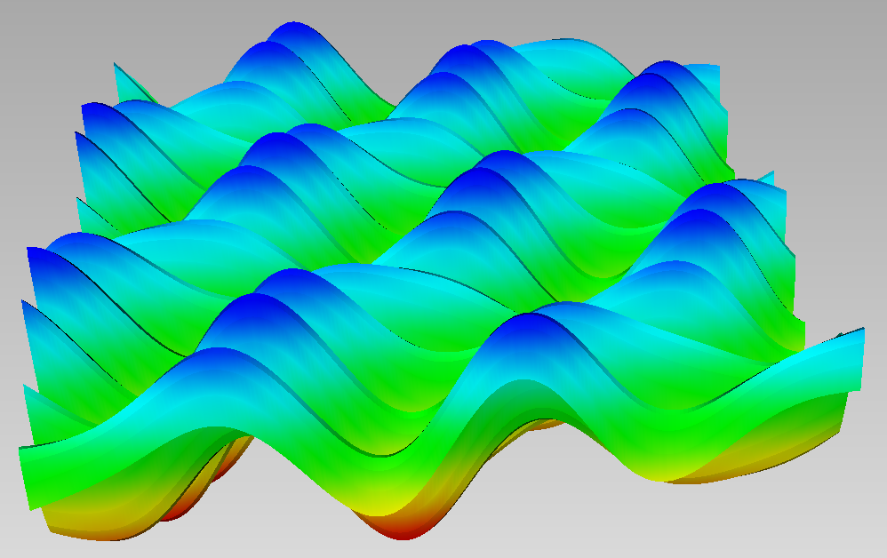

Multivariate exponential decompositon
using MultivariateSeriesWe consider the following function, which is a sum of 6 complex exponentials
f = (u,v) -> 0.5*cos(0.7*pi*(u+v))+0.6*sin(4*pi*u)-0.2*cos(pi*v);
In order to recover the frequencies or exponents of these exponential terms and their coefficients, we sample the function on a grid $({\alpha_1 \over T}, {\alpha_2 \over T}), \alpha=(\alpha_1,\alpha_2)\in A\subset \mathbb{N}^2$. This defines a sequence of moments $\sigma_{\alpha}=f({\alpha_1 \over T}, {\alpha_2 \over T})$. We compute its generating series truncated in degree $\leq 5$.
X = @ring x1 x2
L = monomials(X,0:5)
T = 10
mnt = (V->f(V[1]/T,V[2]/T))
sigma = series(mnt, L)0.3 + 0.8585922907464658dx1 + 0.29774707771034303dx2 + 0.6050846776084937dx1^2 + 0.8328361327510712dx1*dx2 + 0.2906101273580203dx2^2 - 0.15759364518763863dx1^3 + 0.5575373543042985dx1^2dx2 + 0.8039080170899477dx1*dx2^2 + 0.2775204557293506dx2^3 - 0.4519219149027473dx1^4 - 0.22417045976016967dx1^3dx2 + 0.5095797473748392dx1^2dx2^2 + 0.7717888541929423dx1*dx2^3 + 0.2569085959993554dx2^4 + 0.02699524986977328dx1^5 - 0.5338499631663495dx1^4dx2 - 0.2874793003806999dx1^3dx2^2 + 0.46210935078676274dx1^2dx2^3 + 0.7358257607718759dx1*dx2^4 + 0.22699524986977343dx2^5Computing its decomposition using svd
w, Xi = decompose(sigma);yields the weights $\omega$ of the exponential terms in f and the exponentials $\Xi$:
log.(Xi')*T/pi6×2 Matrix{ComplexF64}:
8.54995e-14+4.0im -2.74234e-13+3.49925e-13im
8.66701e-14-4.0im -2.73528e-13-3.49932e-13im
-8.03348e-12+0.7im -6.03198e-12+0.7im
-8.03216e-12-0.7im -6.02904e-12-0.7im
1.54533e-11+1.54104e-11im 8.86233e-12-1.0im
1.5454e-11-1.541e-11im 8.86133e-12+1.0imBy taking the log and scaling by ${T\over \pi}$, we recover the frequency vectors within precision $1O^{-11}$.
w6-element Vector{ComplexF64}:
2.7501205230436507e-15 + 0.29999999999998295im
2.1890339292793378e-15 - 0.29999999999998267im
0.24999999999973513 + 1.1959663390382177e-11im
0.24999999999973493 - 1.195958012365533e-11im
-0.09999999999895023 - 6.168820123541792e-13im
-0.09999999999895037 + 6.168330698883567e-13im